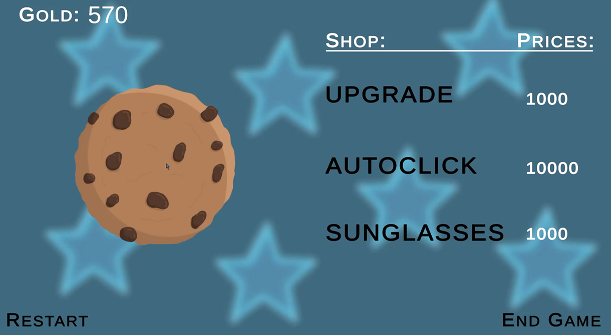
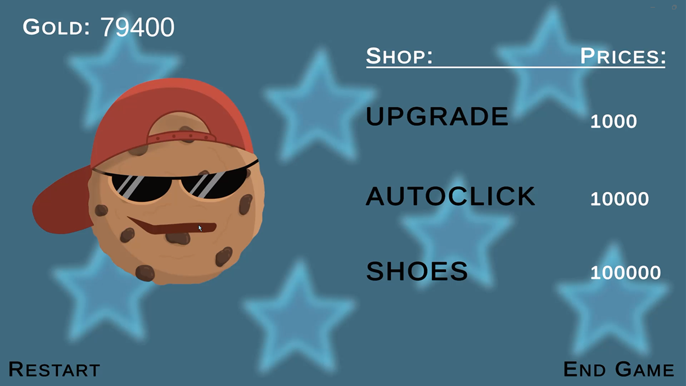
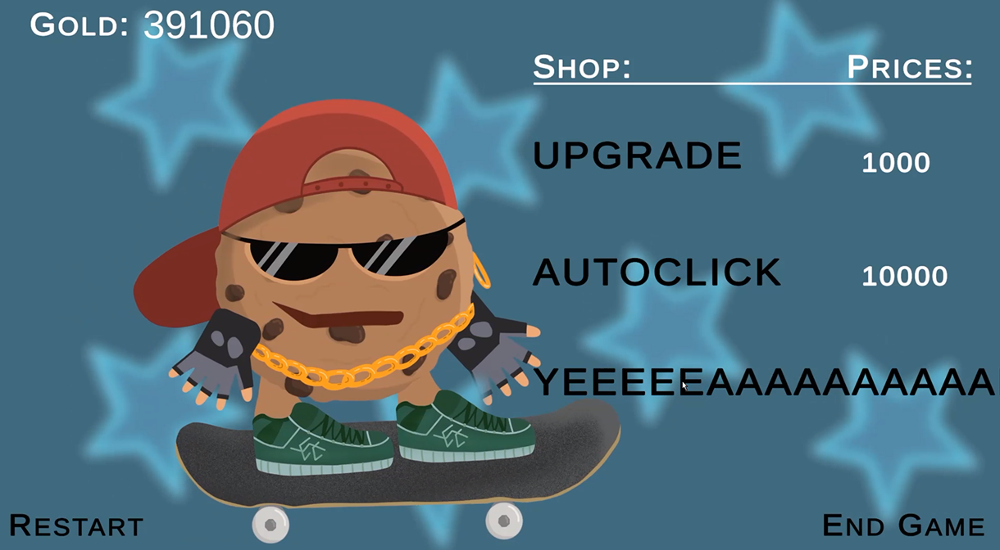

COOKIE CLICKER KICKFLIPPER
OVERVIEW
PROJECT PERIOD: 26.03.2025 - 31.03.2025
TEAM: Solo
MADE WITH: Unity, Procreate
PLAY ON itch.io


ABOUT THE PROJECT
Cookie Clicker Kickflipper was created as a class assignment to develop an incremental game prototype. It is a twist on the well known game, Cookie Clicker.
CONCEPT
This is a game with no clear purpose. Just click, wait, click some more, and watch the numbers get bigger. Maybe there's a suprise at the end?
